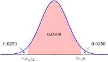
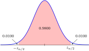

Section 4.1 Introduction to Estimation and Confidence intervals
¶Estimating Based on a Sample.
One of the most useful tools we learn in a statistics class is how to estimate the value of a population parameter based on the value of a statistic seen in a sample. In this first section of Chapter 4, we will focus on the process of estimation. That includes describing two different types of estimators, how they are computed, and how to correctly interpret them. Consider the following situation.
Example 4.1.1. Motivating Estimation.
You wish to estimate the average speed that a certain fast-ball pitcher will throw the ball. In order to make this estimation, you observe 40 throws by this pitcher, in random settings, and record the speed of each of these 40 throws. How can you use this sample to estimate the actual speed of this pitcher's throws?
One simple way to do this is to compute the sample mean for our sample of 40 throws. But as we shall see, this estimation does not provide us enough information. Instead, we will learn to construct a confidence interval to estimate the average speed of the pitcher&s throws.
Objectives
After finishing this section you should be able to
-
describe the following terms:
confidence interval
confidence level
critical value
estimator
interval estimator
lower confidence bound
margin of error
one-sided confidence interval
point estimator
standard error
unbiased estimator
upper confidence bound
-
accomplish the following tasks:
Identify point estimates and explain what is meant by an unbiased estimator
Describe a margin of error
Explain how a margin of error and a point estimate go together to form a confidence interval
Find critical values for various confidence levels using the standard normal distribution table
Find critical values for a one-sided confidence interval
Explain what a confidence interval represents
Subsection 4.1.1 Point Estimators
¶There are many instances in which it is either impossible or impractical to conduct a census and collect data from an entire population in order to find a parameter such as a mean or proportion. In these situations, one common practice is to collect a representative sample from the population and use that sample to estimate the population parameter.
Definition 4.1.2.
An estimator is a tool used to approximate the value of a population parameter based on a random sample drawn from that population.
There are many different tools one could use as an estimator. Our goal is to come up with a method that is both simple and accurate. Perhaps the simplest estimator is one that uses a single value from the sample to estimate the population proportion.
Definition 4.1.3.
A point estimator uses a single statistic from a sample to approximate a population parameter.
In Example 4.1.1, our goal was to estimate the speed of a pitcher's throw. What one measure computed from our sample of 40 throwing speeds would be best for this estimation? There are several possibilities including the mode, the mean, the median, or any other measure of center from this sample. However, which one is best? Which one will routinely give us an estimate that is close to the actual average? Such an estimator is called unbiased.
Definition 4.1.4.
An unbiased estimator is one that will have a sampling distribution centered about the population parameter that is to be estimated.
To better understand this, consider the diagram below.
In this image, \(\theta\) is the population parameter we are attempting to estimate. An unbiased estimator might have a distribution like the blue curve. That is, it may sometimes be too large, sometimes too small, but it will cluster around and have a mean equal to the population parameter \(\theta\text{.}\) On the other hand, a biased estimator like the one with the red probability density curve will be habitually too low (or to high) and will not cluster around the population parameter we are trying to estimate.
Example 4.1.6. Selecting a Point Estimator.
In order to estimate the mean cost of lunch, without a tip, at a certain restaurant, you collect a random sample of 50 checks and look at the total cost, including tip, for each customer. You use the average of these checks as your point estimate for the mean lunch cost. Is this an unbiased estimator?
No! The checks you sampled include a tip. They will have a distribution that is centered above the true average price of a lunch without tip.
Checkpoint 4.1.9.
An unbiased point estimator will always produce the exact value of the population parameter.
Question: is the above statement true or false?
False
Checkpoint 4.1.10.
An unbiased estimator should have a distribution centered at the population parameter.
Question: is the above statement true or false?
True
Subsection 4.1.2 Interval Estimators
¶The problem with a point estimate is that while it fulfills the simplicity requirement for an estimator, it does not give us a very accurate estimation. This is because point estimators leave out an important part of the true picture—the variation. To see this, consider the following example.
Example 4.1.11. Factoring in Variation.
Suppose that the following samples of three values are randomly selected from the same population and the sample mean \(\overline x\) is used as a point estimator for \(\mu\text{,}\) the population mean. What difference, if any, is there between the estimates? Should there be any difference?
\(\lbrace 0, 20, 40 \rbrace\)
\(\lbrace 19, 20, 21 \rbrace\)
Both samples have the same mean, \(\overline x = 20\text{.}\) So there would be no difference in their point estimates. However, the variances in the samples are very different. Sample (a) suggests that the real population mean, while close to 20, could be quite different because the sample has such a large range. On the other hand, sample (b) suggests that the real population mean should be very close to 20 since the sample is not spread out very much.
As this example shows, a point estimator ignores any information about variance that we may be able to gather from the sample. Another way to say this is that there is error in any point estimate because of the randomness of the sampling process. This error is called the standard error.
Definition 4.1.12.
The standard error in a point estimate \(x\) is the standard deviation in the sampling distribution for \(x\text{.}\)
In the next section we will see how to find the standard error when using a sample mean to estimate a population mean. But for now, the important point to recognize is that a single value is not a reliable estimator. To factor in the standard error, we will use an interval to estimate population parameters.
Definition 4.1.13.
An interval estimator is a range of values, centered at a point estimate, into which we estimate the true value of a population parameter will fall.
Note that there are two parts to an interval estimator. The point estimate, which establishes the center, and the radius of the interval. That is, the distance that we move above and below the point estimate to establish the limits of the interval. The picture below shows this.
The true value of the population parameter should lie somewhere between the lower limit and upper limit of this interval. Unfortunately, even when we use an interval to estimate a population parameter, we can not be positive that the population parameter is in the interval. We could, for instance, have drawn a sample of unusual values making the interval estimate unrepresentative of the population.
Checkpoint 4.1.16.
A point estimate gives a complete picture of a population parameter based on the sample taken from that population.
Question: is the above statement true or false?
False
Checkpoint 4.1.17.
An interval estimator uses a range of values to approximate a population parameter.
Question: is the above statement true or false?
True
Subsection 4.1.3 Confidence Intervals
¶The interval estimate that is most commonly used is called a confidence interval. To construct a confidence interval we need three things:
A point estimate to serve as the center of the interval
The standard error for our point estimate
A confidence level
We have already talked about the first two. That leaves the confidence level.
Definition 4.1.18.
A confidence level is the probability that a confidence interval contains the true population proportion.
In can be helpful to think of a confidence levels in conjunction with its complement. That is, if we want to be 95% confident that the confidence interval we are constructing contains the true population parameter, then there will be a 5% probability that it does not. This probability that our interval “misses” the parameter is called \(\alpha\text{,}\) and the confidence interval is referred to as a \(1-\alpha\) confidence interval.
Often phrases such as the following are used to explain what we mean by a 95% confidence interval.
95% of the time the interval will contain the true population parameter.
We are 95% confident that the true population parameter lies in this interval.
The probability that our confidence interval contains the true population proportion is 95%.
To help understand what these phrases mean, consider the following picture.
Each of the twenty confidence intervals depicted by the vertical bars is constructed by taking a sample from the population with parameter \(\theta\text{.}\) Since these represent 95% confidence intervals, we would expect 95% of them (the blue ones) to contain the true population proportion, and 5% of them (the red one) to miss the true population proportion. While it wouldn't always work out exactly this way in reality—with eactly one of twenty intervals missing the mean—this illustration gives us an idea what the 95% (or any other confidence level) means.
In most of our confidence intervals, the population we are sampling will have a normal distribution, or the sample size will be large enough that we can use the central limit theorem to assume that the distribution is normal. We can then use the standard normal distribution to determine what is called the critical value for a given confidence level.
Definition 4.1.20.
A critical value at the \((1-\alpha)\) confidence level is the value of the random variable that divides the middle \((1-\alpha)\) percent of the data from the remainbing \(\alpha\) percent which is split between the two tails.
In a standard normal distribution, these critical values are called \(\pm z_{\alpha/2}\text{,}\) with the positive one separating the right tail from the body of the distribution, and the negative one separating the left tail. This is illustrated in the diagram below.
We make use of the standard normal distribution table to find critical values in the following example.
Example 4.1.22. Finding Critical Values in a Standard Normal Distribution.
Find the critical values for each of the following confidence levels.
95% Confidence Level
98% Confidence Level
To find the critical values for these confidence levels, we must find the z-score that separates the middle \((1-\alpha)\) percent of the data from the top and bottom \(\alpha/2\) percent of the data.
-
For the 95% confidence level, there is 0.9500 in the middle of the normal distribution, and half of the remaining 0.0500 in each of the tails. That means that there is 0.0250 in the upper tail and 0.0250 in the lower tail as shown below.
Figure 4.1.23. Critical Values for a 95% Confidence Level Looking up the probability 0.0250 in the body of negative part of the standard normal distribution table, we find the z-score \(-1.96\text{.}\) Because the standard normal distribution is symmetric, we know that if we looked up the probability \(1-0.0250 = 0.9750\) in the body of the positive part of the table, we would find the positive version of this z-score. Thus the critical values are \(-z_{\alpha/2} = -1.96\) and \(z_{\alpha/2} = 1.96\text{.}\)
-
For the 98% confidence level, the process is similar. There is 0.9800 in the middle of the normal distribution leaving 0.0200 in the tails. Dividing this in half, there is 0.0100 in the upper tail and 0.0100 in the lower tail, as shown below.
Figure 4.1.24. Critical Values for a 95% Confidence Level Again looking up the lower tail probability 0.0100 we find the closest probability in the table is 0.0099 which goes with a z-score of \(-2.33\text{.}\) Therefore, the critical values are \(-z_{\alpha/2} = -2.33\) and \(z_{\alpha/2} = 2.33\text{.}\)
These critical values are put together with the standard error, which is the standard deviation in the sampling distribution to give us the radius of our confidence interval. This radius is called the margin of error.
Definition 4.1.25.
The margin of error for a confidence interval is the standard deviation of the sampling distribution for the population parameter multiplied by the critical value for the confidence level.
The margin of error comes from solving the z-score equation in reverse. In the case of a sample mean, the z-score of a particular value \(\overline x\) is found using:
If we solve this equation for the mean \(\mu\) of the population, we get:
Now \(\overline x\) is the sample mean which is our point estimate. The margin of error is then \(z \sigma_x\text{.}\) For a specific confidence level, we pick the correct critical values for z, allowing us to find the margin of error. An example of this is shown below.
Example 4.1.26. Finding the Margin of Error.
Suppose that the standard deviation of the sampling distribution for a population parameter is \(\sigma_x = 4.35\text{.}\) Find the margin of error for:
A 95% confidence interval
A 98% confidence interval
The margin of error is \(\sigma_x\) times \(z_{\alpha/2}\text{.}\) Based on our work in Example 4.1.22, this gives the following values.
-
For a 95% confidence interval, \(z_{\alpha/2} = \pm 1.96\) so that the margin of error is:
\begin{equation*} \pm 1.96 \times 4.35 = \pm 8.526\text{.} \end{equation*} -
For a 98% confidence interval, \(z_{\alpha/2} = \pm 2.33\) so that the margin of error is:
\begin{equation*} \pm 2.33 \times 4.35 = \pm 10.1355\text{.} \end{equation*}
Finally, by adding the margin of error to our point estimate, we can construct the upper and lower bounds of the confidence interval.
Definition 4.1.27.
A confidence interval for a population parameter is found by adding and subtracting the margin of error to the point estimate. That is, the confidence interval has the form:
Checkpoint 4.1.32.
Suppose that a population parameter \(\theta\) is to be estimated using a 95% confidence interval. The standard error in the point estimate is 3.4.
Question: what is the margin of error? Round your answer to three decimal places.
\(\pm 6.664\)
Checkpoint 4.1.33.
You wish to construct a 97% confidence interval using a standard normal distribution.
Question: what is the positive critical value, \(z_{\alpha/2}\text{?}\)
2.17
Checkpoint 4.1.34.
If we construct a confidence interval at the 96% confidence level, that means that if we were to take 50 samples and build such a confidence interval, we expect the true population parameter to be inside approximately 48 of those 50 intervals.
Question: is the above statement true or false?
True
Checkpoint 4.1.35.
A confidence interval will always contain the true population proportion.
Question: is the above statement true or false?
False
Subsection 4.1.4 One-Sided Confidence Intervals
¶Occasionally we may be interested in only an upper bound or a lower bound of a confidence interval. That is, instead of specifying a range into which the population parameter must fall, we want to say the parameter is either “no bigger” than or “no less than” acertain value. In these cases, we can construct a one-sided confidence interval.
Definition 4.1.36.
An upper confidence bound for a population parameter is found by taking the point estimate for that parameter and adding the critical value times the standard error. That is:
The picture below shows how in an upper confidence bound, the entire probability \(\alpha\) is placed in the right tail since we only care about the upper limit, not the lower limit. This means that we need to use a critical value \(z_{\alpha}\) as opposed to \(z_{\alpha/2}\text{.}\) The critical value \(z_{\alpha}\) separates the top \(\alpha\) percent of the data from the bottom \((1-\alpha)\) percent of the data.
Definition 4.1.38.
A lower confidence bound for a population parameter is found by taking the point estimate for that parameter and subtracting the critical value times the standard error. That is:
The picture below shows how to find the critical value for a lower confidence bound. This time the probability that the confidence interval does not contain the true proportion is all placed in the left tail. Thus, we would use a critical value \(-z_{\alpha}\text{,}\) separating the bottom \(\alpha\) from the top \((1-\alpha)\) percent of the data. The negative sign in front of \(z_{\alpha}\) becomes the subtraction in the formula above.
Definition 4.1.40.
An upper or lower confidence bound is called a one-sided confidence interval.
The following example shows how we might build one-sided confidence intervals.
Example 4.1.41. Finding One-Sided Confidence Intervals.
Suppose that \(x=10\) is the point estimate for a population parameter, and that the standard error is \(\sigma_x = 1.5\text{.}\) Find:
A 95% upper confidence bound for the population parameter
A 98% lower confidence bound for the population parameter
-
95% Upper Confidence Bound.
To get a 95% upper confidence bound, we need a critical value \(z_{0.05}\) that separates the bottom 95% of the data from the top 5%. Looking up \(0.9500\) in the standard normal distribution table, we find \(0.9495\) goes with a z-score of \(1.64\) and \(0.9505\) goes with \(1.65\text{.}\) So the z-score we want is half-way between \(1.64\) and \(1.65\text{,}\) which gives \(z_\alpha = 1.645\) (Note: we only average this way because 0.95 is exactly half way between \(0.9495\) and \(0.9505\)). Then, computing the upper confidence bound, we get:
\begin{equation*} 10 + 1.645 \times 1.5 = 10 + 2.4675 = 12.4675\text{.} \end{equation*} -
98% Lower Confidence Bound.
In this case we want 2% in the bottom tail and 98% in the top tail. Looking up \(0.0200\) in the standard normal distribution table we find a z-score of \(-2.05\text{.}\) Note that the critical value is negative, so when we multiply by the standard error and add it to the point estimate, we will actually subtract. This computation yields:
\begin{equation*} 10 - 2.05 \times 1.5 = 10 - 3.075 = 6.925\text{.} \end{equation*}
Checkpoint 4.1.44.
We wish to find a 97% upper confidence bound.
Question: what critical value should we use for \(z_\alpha\text{?}\)
1.88
Checkpoint 4.1.45.
Suppose that the point estimate for a population parameter \(\theta\) is 0.4 and the standard error in this point estimate is 0.02.
Question: what is the 99% lower confidence bound for \(\theta\text{?}\) Round your answer to four decimal places.
0.3534